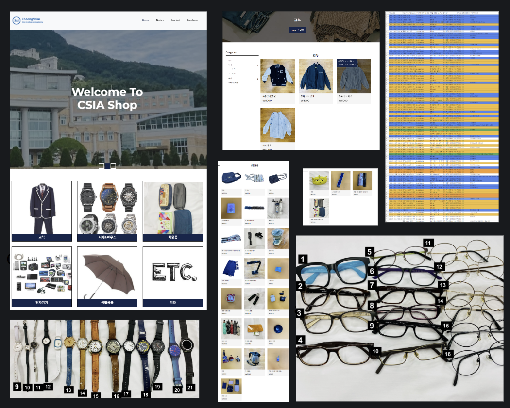

<div id="de_modal-content" class="container">
    <div class="row g-5">
        <div class="col-lg-8">
            
        </div>

        <div class="col-lg-4 de_project-info">
            <h3>Flea Market</h3>
            <p>Within the Monitor council, monitors persuaded dorm masters to sell lost and found products that have been neglected over the years at cheap prices rather than abandoning them during the school festival.
            </br></br>School flea market's official website, payments, and quantity database were created by me. Items varying from school uniforms to electronics were all sold and profits were all donated.

        </p>
           
            <div class="de_project-details">
                <div class="d-field">
                    <i class="fa fa-user-o"></i>Client: <span>Monitors</span>
                </div>
                <div class="d-field">
                    <i class="fa fa-file-text-o"></i>Type: <span>Website</span>
                </div>
                <div class="d-field">
                    <i class="fa fa-calendar-o"></i>Year: <span>2022</span>
                </div>
                <div class="d-field">
                    <i class="fa fa-external-link"></i>Preview: <span><a href="https://csiashop.ga">https://csiashop.ga</a></span>
                </div>
            </div>
            <div class="spacer-30">
                <blockquote>
                    <b>Functions:</b></br>
                    
                </blockquote>
                <span style="font-size:16px"> <b>
                    - Payment page</br>
                    - Real-time quantity database</br>
                    - Real-time price update</br>
                </span>
            </div>
            
        </div>
        
    </div>
</div>